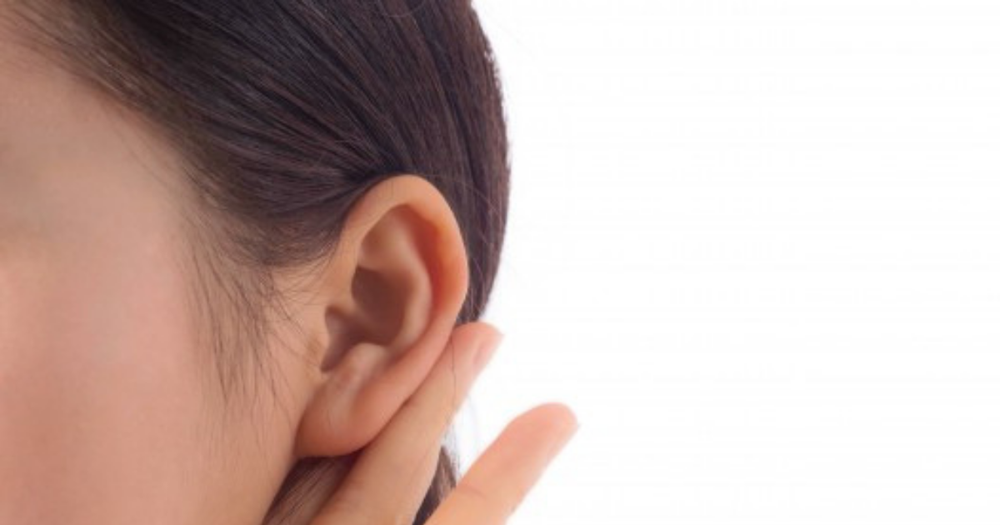

နားမှာ ဝက်ခြံပေါက်ခြင်း

နားမှာ ဝက်ခြံပေါက်ခြင်းဝက်ခြံဟာ ဆယ်ကျော်သက်တွေမှာ အဖြစ်များတယ်ဆိုပေမဲ့ အသက်အရွယ်မရွေး ဖြစ်နိုင်ပါတယ်။ လူတော်တော်များများဟာ ဝက်ခြံကို တစ်ခါလောက်တော့ ပေါက်ဖူးကြမှာပါ။ ဝက်ခြံက နေရာမရွေး ပေါက်တတ်ပေမဲ့ အဆီပြန်တဲ့နေရာ (ဥပမာ မျက်နှာနဲ့ နောက်ကျောမှာ) အဖြစ်များပါတယ်။ ဒါကြောင့် နားရွက်ထဲမှာ ဝက်ခြံပေါက်တယ်ဆိုတာ ထူးဆန်းတဲ့ ကိစ္စတော့မဟုတ်ပါဘူး။ ပြီးတော့ ဒါက အိမ်မှာတင် အလွယ်တကူ ကုသလို့ရပါတယ်။
ဘာလို့ နားထဲမှာ ဝက်ခြံ ဖြစ်ရတာလဲဝက်ခြံလို့ ပြောလိုက်ရင် Whiteheads၊ Blackheads ကနေပြီး အရည်အိတ်ထိ အကုန်ပါပါတယ်။ Whiteheads က မွေးညှင်းပေါက်မှာ အဆီပိတ်ရာက ဖြစ်လာပြီး Blackheads ကတော့ အဆီနဲ့ လေနဲ့ထိတွေ့ရာကနေ ဖြစ်လာတာပါ။
ဝက်ခြံက ပေါက်သွားပြီး ပိုးဝင်လာရင်တော့ ရောင်ရမ်းပြီး ဆင်ဝက်ခြံထိ ဖြစ်သွားတတ်ပါတယ်။ နားမှာဖြစ်တဲ့ ဝက်ခြံကတော့ နားအတွင်းမှာရော အပြင်မှာပါဖြစ်နိုင်ပါတယ်။ နားရဲ့ အပြင်အရေပြားက အရိုးနုနဲ့ လုပ်ထားတာဖြစ်ပြီး အဆီနည်းနည်း ပါပါတယ်။ နားအတွင်းပိုင်းမှာတော့ မွေးညင်းဆဲလ်တွေ အဆီဂလင်းတွေနဲ့ နားဖာချေးထုတ်ပေးတဲ့ ဂလင်းတွေ ရှိပါတယ်။ ဒီဂလင်းတွေက အဆီတွေထုတ်ပေးတဲ့အခါ၊ မွေးညင်းပေါက်ကို ဆဲလ်အသေတွေ ဘတ်တီးရီးယားတွေ ပိတ်ဆို့လာတဲ့အခါ ဝက်ခြံထွက်လာပါတယ်။ ဘတ်တီးရီးယား ပေါက်ရခြင်းရဲ့ အကြောင်းရင်းကတော့ မသန့်ရှင်းတဲ့ နားကြပ်တွေနဲ့ နားထောင်တာ၊ မသန့်ရှင်းတဲ့ လက်နဲ့ နားခဏခဏ ကလော်တာကြောင့်ပဲ ဖြစ်ပါတယ်။
တခြားအကြောင်းရင်းတွေကတော့-
• စိတ်ဖိစီးမှု
• ဟော်မုန်းဓာတ် မမျှတမှု
• ခေါင်းလျှော်ရည်တွေ အလှကုန်တွေနဲ့ ဓာတ်မတည့်လို့ပဲ ဖြစ်ပါတယ်။
ခန္ဓာကိုယ်ရဲ့ တခြားနေရာမှာ ဝက်ခြံ ပေါက်ရတာလဲ ဒီအကြောင်းတွေကြောင့်ပါပဲ။ ဒါပေမဲ့ နားကတော့ နူးညံ့တဲ့အတွက် ဂရုစိုက်ပြီး ကုသဖို့ လိုပါတယ်။နားထဲက ဝက်ခြံကို ညှစ်လို့ရမလားညှစ်ချင်ရင်တောင် မညှစ်လိုက်ပါနဲ့ဦး။ ဒီလိုလုပ်တာက ရောင်ရမ်းပြီး ဝက်ခြံကို ပိုဆိုးစေပါတယ်။ ညှစ်လိုက်လို့ အခန့်မသင့်ရင် ဘတ်တီးရီးယားနဲ့ ပြည်တွေက အတွင်းဘက်ထိ တိုးဝင်ပြီး ရောင်ရမ်းတာမျိုးတွေ ဖြစ်လာနိုင်ပါတယ်။ အပြင်ကို ထွက်သွားရင်တောင် အနာဖေးတက်ပြီး အနာရွတ်ကျန်နိုင်ပါတယ်။ ဝက်ခြံက ပိုးဝင်သွားရင် ပြည်ဖုကြီးတွေ ဖြစ်လာနိုင်ပါတယ်။ သူ့ဘာသာသူလည်း ဖြစ်နိုင်သလို သွားပြီးဆွတာ၊ ဖောက်တာ၊ ညှစ်တာတွေကြောင့်လည်း ဖြစ်နိုင်ပါတယ်။ ဒီပြည်ဖုကြီးတွေဟာ အင်မတန်နာကျင်ပြီး ဝက်ခြံကို ကုတဲ့နည်းနဲ့ပဲ ကုရမှာပါ။ဘယ်လို ကုကြမလဲအလွယ်နည်းကတော့ ဝက်ခြံ မြန်မြန် ပျော့သွားဖို့အတွက် ရေနွေးအိတ်ကပ်ပေးနိုင်ပါတယ်။ ဒါမှ ပြည်တွေထိပ်မှာ စုလာပြီး အလိုလို ပေါက်သွားမှာပါ။ ပေါက်သွားတာနဲ့ သတိထားပြီး ပြည်တွေကို မြန်မြန်သုတ်လိုက်ပါ။ ပြည်တွေ မပျံ့ဖို့နဲ့ ဘတ်တီးရီးယားတွေ မပေါက်ဖို့ သေချာဆေးလိုက်ပါ။ဝက်ခြံက မပျောက်ဘဲ အချိန်တွေကြာလာတယ် ရောင်လာတယ်ဆိုရင်တော့ ဆရာဝန်နဲ့ ပြသပါ။ ဆရာဝန်က သာမန်လား ပြင်းထန်လား အဆင့်ခွဲပေးပြီး ကုသမှုတွေ လုပ်ပေးပါလိမ့်မယ်။
• လိမ်းဆေး : ဗီတာမင် အေပါတဲ့ လိမ်းဆေးတွေ လိမ်းပေးနိုင်ပါတယ်။
• Benzoyl Peroxide : သိပ်မဆိုးတဲ့ ဝက်ခြံတွေအတွက် 5% Benzoyl Peroxide ကို သုံးနိုင်ပါတယ်။ ဒါပေမဲ့ အနာရှိတဲ့နေရာ၊ နှာခေါင်းထဲနဲ့ ပါးစပ်ထဲကို လိမ်းလို့မရပါဘူး။
• ပဋိဇီဝဆေး : ပိုးဝင်ထားတဲ့ ဝက်ခြံတွေအတွက် Minocycline နဲ့ Doxycycline ကို သုံးနိုင်ပါတယ်။ ဒါပေမယ့် ဆေးယဉ်ပါးတာတွေ ဖြစ်လာတာကြောင့် နောက်ပိုင်းမှာ သိပ်မသုံးတော့ပါဘူး။
• အခြားဆေးများ : ဝက်ခြံ သိပ်ဆိုးလာရင်တော့ ဗီတာမင် အေ ကရတဲ့ ဆေးတွေ သုံးနိုင်ပါတယ်။ အစွမ်းထက်သလို ဘေးထွက်ဆိုးကျိုးလည်း များတဲ့ ဆေးတွေပါ။ဝက်ခြံတွေ အနာသက်သာအောင် Ibuprofen နဲ့ Naproxenလို အကိုက်အခဲပျောက်ဆေးတွေ သောက်နိုင်ပါတယ်။ ဝက်ခြံအပြင် တခြား ဘာဖြစ်နိုင်သေးလဲနားအပြင်မှာ ဆိုရင်တော့ သေသေချာချာ မြင်ရပေမဲ့ နားအတွင်းမှာ အဖုတစ်ခုခုရှိနေရင် ဝက်ခြံလား တခြားဟာလား ခွဲရခက်ပါတယ်။ ဖြစ်နိုင်တာတွေကတော့-
• Keloid : အနာရွတ်ကြွတက်နေတာ
• Seboric Keratosis
• Sebaceous Cyst : အဆီအိတ်တွေပဲ ဖြစ်ပါတယ်။ဒါကြောင့် နားအတွင်းမှာ ဘာမှန်းမသိတဲ့ အဖုတစ်ခုခုက ရောင်ရမ်းနာကျင်ပြီး အချိန်အကြာကြီးရှိနေမယ်ဆိုရင် ဆရာဝန်နဲ့ ပြသသင့်ပါတယ်။ နောက်ပြီး ဝက်ခြံ ကုဆေးတွေနဲ့ မသက်သာဘူးဆိုရင် ဝက်ခြံ မဟုတ်တာလည်း ဖြစ်နိုင်တာကြောင့် ဆရာဝန်နဲ့ ပြရပါတယ်။ လေ့လာမှုတစ်ခုမှာ ဝက်ခြံလို့ ထင်ပြီး လာပြပေမဲ့ တကယ်တမ်း ဖြစ်နေတာက တခြား နားရောဂါတွေ၊ ပိုးဝင်တာ၊ ဆိုရီယေးစစ်နဲ့ ရေယုန်ပေါက်တာတွေကများပြီး တကယ့် ဝက်ခြံက ၁ ရာခိုင်နှုန်းပဲ ရှိပါတယ်တဲ့။ ကာကွယ်နည်းများဝက်ခြံက ဘယ်တော့ဖြစ်လာမလဲ မသိနိုင်ပေမယ့် ခဏခဏမဖြစ်အောင် လုပ်ပေးလို့ရတာတွေ ရှိပါတယ်။ အဓိကကတော့ မျက်နှာ လည်ပင်းနဲ့ နားတဝိုက်ကို သန့်ရှင်းအောင်ထားပါ။ သာမန်ဆပ်ပြာတွေနဲ့ မျက်နှာသစ်မဲ့ အစား pH ညှိပေးတဲ့ ဆပ်ပြာတွေကို သုံးပါ။ ခဏခဏချေးချွတ်တာကလည်း အသားအရည်ကို ပျက်စီးစေလို့ သတိထားပါ။ မျက်နှာသစ်ပြီးတဲ့အခါမှာလည်း ညင်ညင်သာသာပဲ သုတ်ပေးပါ။ နားကြပ်တွေကို ပုံမှန်သန့်စင်ပေးတာကလည်း ဝက်ခြံ ခဏခဏမဖြစ်ဖို့ အထောက်အကူ ပြုပါတယ်။
Source-ဒေါက်တာ ထက်ထက်ဇော်ဝင်း